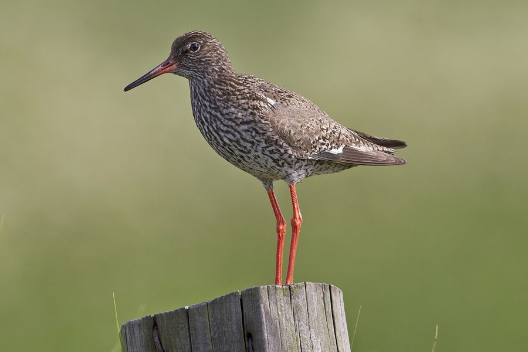

कॉमन रेडशैंकCommon Redshank
Tringa totanus · Scolopacidae · BRD-0122

- Scientific name वैज्ञानिक नाम
- Tringa totanus (Linnaeus, 1758)
- Family कुल
- Scolopacidae
- Hindi हिंदी
- कॉमन रेडशैंक
- Local names स्थानीय नाम
- redshank, red shank, common redshank, redshenk
- Status here यहाँ की स्थिति
- native
- Movement आवागमन
- Winter visitor
- IUCN IUCN
- LC
- Review समीक्षा
- audited and independently read
When to look कब देखें
Winter visitor शीतकालीन प्रवासी. Expected mainly in August, September, October, November, December, January, February, March, April. मुख्यतः अगस्त, सितंबर, अक्टूबर, नवंबर, दिसंबर, जनवरी, फ़रवरी, मार्च, अप्रैल में अपेक्षित।
Arrives in August–September from breeding grounds in Central Asia and Siberia; departs by April. Expected along river systems and shallow wetlands. All migrants and visitors →
Uses and possibilities उपयोग और संभावनाएँ
Guide: Where the winter birds are: Bakhira, Parvati Arga and the Ayodhya jheels
Drawn from the documented uses in the profile below, where each is labelled traditional, current or a research lead. All uses →
Tell it apart from इनसे अलग पहचानें
कॉमन रेडशैंक / Common Redshank
Tringa totanus (Linnaeus, 1758) — Scolopacidae
कॉमन रेडशैंक — यह मध्यम आकार की एक पतली टाँगों वाली चिड़िया है जो साइबेरिया से सर्दियों में भारत आती है। इसके पैर और चोंच का निचला हिस्सा चमकीले लाल रंग का होता है — जिससे इसका अंग्रेजी नाम "लाल चोंच" मिलता है। ये नदियों और तालाबों के पास कीचड़ में चलती-फिरती हैं और अपनी लंबी चोंच से कीचड़ में खोदकर छोटे जीव खोज निकालती हैं।
Quick Identification त्वरित पहचान
| Feature | Description |
|---|---|
| Size | Medium wader; 27–29 cm long |
| Legs | Distinctive red or orange-red; long and slender |
| Bill | Reddish-orange base, black tip; straight and probing |
| Plumage | Brown-grey upperparts with darker streaking; white underparts |
| Wing pattern | White rump and trailing edge visible in flight (diagnostic) |
| Behaviour | Rapid, jerky movements; bobs head; often seen in small flocks |
| Call | Loud, musical teu-teu-teu given in flight |
Field tip: A medium wader with unmistakable bright red legs and orange-red base of bill, with white rump visible in flight — is a Common Redshank. In eastern UP during winter, found on mudflats of rivers and at shallow wetland margins. The red legs are diagnostic even at distance.
हिंदी — कैसे पहचानें:
मध्यम आकार की वाडर; लाल पैर और चोंच।
पीछे के पैर चमकीले लाल।
नदी के कीचड़ में दिखता है।
उड़ान में सफेद पीठ दिखता है।
Morphology आकारिकी
Biometrics (subspecies ussuriensis, used in eastern UP):
| Measurement | Range |
|---|---|
| Total length | 270–290 mm |
| Wing (flattened chord) | 155–175 mm |
| Tail | 65–85 mm |
| Bill | 40–50 mm |
| Tarsus | 34–42 mm |
| Weight | 100–180 g |
Size: 27–29 cm long; wingspan 43–54 cm. Weight 100–180 g. A medium-sized wader.
Plumage: Upperparts grey-brown, heavily streaked with darker brown. Head and neck buff-brown with fine streaking. Underparts white with buff wash on flanks. Breeding plumage has more rufous tones; winter plumage greyer. Rump and tail base white — conspicuous in flight.
Legs and feet: Diagnostic bright orange-red or blood-red. Long and slender, adapted for wading in deep water.
Bill: Slightly upturned; base orange-red, distal third black. Straight probing bill, used for searching soft mud and water.
Wings: Upper wing coverts brown; flight feathers darker. White trailing edge and rump are diagnostic.
Sexes: Females slightly larger; little sexual dimorphism.
Vocalisations. Three main call types:
- Flight call: A loud, musical teu-teu-teu or tui-tui-tui, given during alarm or when flushed.
- Contact call: Soft whistles between foraging birds.
- Alarm: Sharp chip calls when disturbed.
हिंदी: जोर की संगीत जैसी कूकना। "टेऊ-टेऊ-टेऊ" की आवाज़।
Behaviour & Ecology व्यवहार और पारिस्थितिकी
Wading and probing: Common Redshanks are specialist probers, using their long bill to penetrate soft mud and water for small invertebrates. They wade in water up to their belly and also walk on exposed mudflats.
Feeding: Primarily insectivorous, taking:
- Aquatic insect larvae (chironomids, mayflies)
- Small aquatic crustaceans
- Worms and small gastropods
- Occasional small fish
Foraging behaviour: Methodical, walking slowly through water or mud, pausing to probe. Often feed alone or in small flocks.
Alert behaviour: Highly vigilant birds; often the first waders to alarm and flush. Known for loud alarm calls that alert other species.
Territorial: Establish feeding territories in winter on river systems and wetlands.
Flight: Fast, direct flight with flickering wingbeats. White rump and trailing edge distinctive in flight.
हिंदी: कीचड़ में प्रोब करके खाना खोजता है। बहुत सतर्क पक्षी है। डर से जोर की आवाज़ निकालता है।
Life Cycle / Phenology जीवन चक्र
Winter visitor: Arrives in eastern UP from August, with peak numbers September–November. Departs February–April, with most birds gone by May.
Breeding range: Central Asia, southern Siberia, and steppes of Kazakhstan. Breeds April–August at elevation 0–1,500 m. Nests in grass tussocks in marshes.
Migration: Diurnal migrant, observed in flight over fields during passage. Some populations use stopover sites in the Panjab and western UP.
Wintering: Concentrated at productive river systems and large wetlands. Forms small flocks at favoured sites.
Courtship: Takes place on wintering grounds in early spring; males give display flights.
Timing in UP: Earliest arrivals August (vanguard); main arrival September–October; peak January–February; departure begins February, completed by April.
हिंदी: अगस्त में आना शुरू करते हैं, अप्रैल तक चले जाते हैं। नदियों के कीचड़ पर रहते हैं।
Host Plants or Prey आहार
| Food Type | Examples | Capture Method |
|---|---|---|
| Aquatic insect larvae | Chironomids, mayfly nymphs | Probing in soft mud and water |
| Small crustaceans | Freshwater shrimp, water fleas | Picking from surface or probing |
| Aquatic worms | Oligochaetes, nematodes | Probing in mud |
| Small gastropods | Freshwater snails | Extraction from shells or mud |
हिंदी: छोटे जीव खोजता है। कीचड़ में चोंच डालकर निकालता है।
Predators / Natural Enemies शत्रु
- Avian predators: Peregrine Falcon, Marsh Harrier, Shikra, Indian Eagle-Owl
- Mammalian predators: Fox, jackal, wild cat
- At roost: Corvids
हिंदी: शिकारी चिड़ियाँ और कुत्ते इसका शिकार करते हैं।
Agricultural / Human Relevance कृषि प्रासंगिकता
Protected status: Listed under Schedule IV of the Wildlife (Protection) Act, 1972 (amended 2022). Hunting is illegal in India.
Ecological value: Important insectivore in winter wetlands; helps control aquatic insects including disease vectors.
Wetland health indicator: Used as a bioindicator of wetland condition and water quality in wetland survey protocols.
Cultural significance: Known locally by the reddish legs; mentioned in historical accounts of eastern UP wetlands.
हिंदी: यह पक्षी विधि अधिनियम 1972 के अंतर्गत संरक्षित है। इसका शिकार करना कानूनी रूप से निषिद्ध है।
Expected Locally स्थानीय रूप से अपेक्षित
Not a field record. Written from published accounts for eastern Uttar Pradesh. No confirmed local sighting yet — if you have seen it, that is what the atlas needs.
अभी तक स्थानीय पुष्टि नहीं। यह विवरण प्रकाशित स्रोतों से है, किसी अवलोकन से नहीं।
The Common Redshank is a winter visitor to the mudflats and shallow wetlands of eastern Uttar Pradesh. Mishra et al. (2019) recorded this species at Bakhira Bird Sanctuary in Sant Kabir Nagar district (adjoining Basti district to the west) in their October 2017 to March 2018 counts. Yashmita-Ulman & Singh (2022) also documented the species in wetlands of Ayodhya district, including Samda Jheel and Sirsa Jheel. The species is expected on the Ghaghra and Rapti river systems, particularly where mudflats are exposed and water levels are shallow. Peak occurrence should be December–February. A first record would require a dated photograph with GPS coordinates and date, submitted through the About page.
Distribution वितरण
Global range: Eurasia and northern Africa, from Iceland to Japan. Breeds in steppe regions; winters across southern Eurasia and Africa.
In India: Widespread winter visitor across the subcontinent, particularly abundant on river systems and wetlands.
In Uttar Pradesh: Regular winter visitor throughout the state, concentrated on the Ganges, Ghaghra, and Rapti river systems.
In Basti district / eastern UP: Winter visitor to mudflats and shallow wetlands of the Ghaghra and Rapti river systems. Expected August–April, with peak occurrence December–February.
Research Questions शोध प्रश्न
- What are the population counts and population trends of Common Redshanks on the Ghaghra and Rapti rivers over the winter season?
- How does the distribution of Common Redshanks relate to water level fluctuations and mudflat exposure on river systems?
- क्या रेडशैंक नदी के एक ही हिस्से पर बार-बार आते हैं, या हर साल अलग-अलग जगहों पर जाते हैं?
- What aquatic invertebrates constitute the bulk of the redshank's winter diet in eastern UP wetlands?
- क्या बाँधों के कारण नदी के पानी के स्तर में बदलाव से रेडशैंक की संख्या प्रभावित होती है? (A child can monitor water levels and redshank counts monthly.)
- Are the same individuals or families showing site fidelity across multiple winters?
Similar Species मिलती-जुलती प्रजातियाँ
| Species | Key Difference | Hindi | Field Rule | |
|---|---|---|---|---|
| [[common_greenshank\ | Common Greenshank]] (Tringa nebularia) | Larger; greenish legs; more robust bill; paler plumage | ग्रीनशैंक | Redshank is smaller with red legs; Greenshank is larger with greenish legs. Greenshank also has a slight upturn to the bill. |
| [[green_sandpiper\ | Green Sandpiper]] (Tringa ochropus) | Smaller and stockier; dark grey above, white below; dark legs | ग्रीन सैंडपाइपर | Green Sandpiper is much darker above and shorter-legged. In flight, shows dark underwing (not white). |
| Spotted Redshank (Tringa erythropus) | Darker plumage; red legs and base of bill in breeding, but note black and white pattern | स्पॉटेड रेडशैंक | This species is rare in UP but darker overall. Red legs similar but check plumage colour. | |
| [[wood_sandpiper\ | Wood Sandpiper]] (Tringa glareola) | Smaller; spotted upperparts; greenish legs; white rump with darker sides | वुड सैंडपाइपर | Wood Sandpiper is smaller and more spotted. Legs greenish not red. Rump shows dark barring on sides. |
Field rule: A medium wader with unmistakable bright red legs and reddish-orange bill, with white rump visible in flight, probing in mud — is a Common Redshank. The red legs are diagnostic. Greenshanks are paler and larger with greenish legs.
Taxonomy & Classification वर्गीकरण
Original description. Described by Carl Linnaeus in 1758 in Systema Naturae (10th edition), volume 1, page 145, as Scolopax totanus. Type locality: Europe.
Subspecies. Nine subspecies are recognised across the range:
- T. t. totanus — Europe
- T. t. ussuriensis — Siberia and Central Asia (occurs in India)
- T. t. cinereus — Far East Russia
The subspecies occurring in eastern UP is T. t. ussuriensis, which breeds in southern Siberia and Central Asian steppes.
Family and order placement. Order Charadriiformes; family Scolopacidae (sandpipers, phalaropes, snipes). The genus Tringa contains the "shanks" or "teals" (phalaropes), with eight species.
Phylogenetic notes. Tringa totanus is sister to T. erythropus (Spotted Redshank), forming a clade with other Tringa species. Recent molecular work places it within a monophyletic group of temperate waders.
IUCN status rationale. Assessed as Least Concern (LC) globally. The global population is large (around 500,000 individuals) and stable. The species is adaptable to human-modified wetlands and is not threatened globally. However, wetland loss in some regions is a concern.
Photo Gallery फोटो गैलरी
No photos yet — add field photos to media/species/common_redshank/ and run node scripts/sync_photos.js.
Wanted photos:
- [ ] Individual on mudflat showing red legs clearly (लाल पैर स्पष्ट)
- [ ] In flight showing white rump (उड़ान में सफेद पीठ)
- [ ] Probing in mud or water (कीचड़ में चोंच डाले)
- [ ] Flock on river margins (झुंड में नदी के किनारे)
- [ ] Close-up of head and bill showing orange-red base (चोंच क्लोज़-अप)
References संदर्भ
- Linnaeus, C. (1758). Systema Naturae per Regna Tria Naturae. 10th ed. Laurentii Salvii, Holmiae.
- Ali, S. & Ripley, S.D. (1987). Handbook of the Birds of India and Pakistan. Vol. 2. Oxford University Press, New Delhi. Pp. 236–240.
- Grimmett, R., Inskipp, C. & Inskipp, T. (2011). Birds of the Indian Subcontinent. 2nd ed. Christopher Helm, London. Pp. 130–132.
- Mishra, H., Kumar, V. & Kumar, A. (2019). Population structure and habitat utilization of migratory birds at Bakhira Bird Sanctuary, Uttar Pradesh, India. Pakistan Journal of Zoology, 52(1): 247–254.
- Yashmita-Ulman & Singh, M. (2022). Avifaunal diversity in unprotected wetlands of Ayodhya District, Uttar Pradesh, India. Journal of Threatened Taxa, 14(8): 21561–21578.
- BirdLife International (2023). Tringa totanus. IUCN Red List of Threatened Species. IUCN, Cambridge.
Source file: species/fauna/birds/common_redshank.md